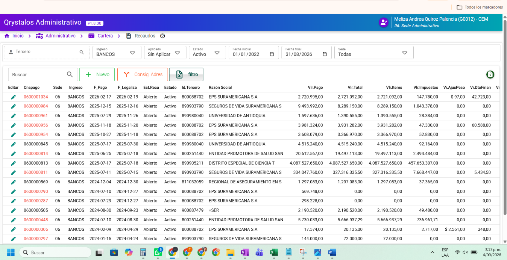

Periodo contable cerrado · Recaudo Cerrado (aplicado) · INGRESO BANCOS · Sin aval → no «Desaplicar» clásico; sí Solicitar aval desaplicar pago. Tras aval contable → Desaplicar (con aval) ejecuta reversión completa + UPDATE Retirada + reliquidación.
Al pulsar «Solicitar aval…» el recaudo queda en cola para Contabilidad (FPAG.AVALCONTABLE = Pendiente). Mismo permiso cartera o permiso dedicado — definir en USGRUH.
| Ret | N° Factura | Vlr. factura | Valor pago | Estado línea |
|---|---|---|---|---|
| — | FV-2025-00124 | $ 1.250.000 | $ 1.250.000 | Activa |
| — | FV-2025-00188 | $ 890.400 | $ 890.400 | Activa |
Recaudos aplicados (BANCOS/CAJA) con solicitud de aval. Al avalar, cartera podrá ejecutar el retiro masivo autorizado (sin reabrir FPAG).
| Cnspago | Tercero | F. pago | Vlr. pago | Solicitó | Estado aval | |
|---|---|---|---|---|---|---|
| 0600001034 | EPS SURAMERICANA | 2025-02-17 | $ 2.140.400 | meliza.q | Pendiente | |
| 0600000984 | UNIVERSIDAD ANTIOQUIA | 2025-12-15 | $ 450.000 | jperez | Pendiente |
| Ret | N° Factura | Vlr. factura | Valor pago | Estado línea | Nro. comprob. retiro |
|---|---|---|---|---|---|
| — | FV-2025-00124 | $ 1.250.000 | $ 1.250.000 | Retirada | CP-REV-202509-00421 |
| — | FV-2025-00188 | $ 890.400 | $ 890.400 | Retirada | CP-REV-202509-00421 |
Las filas no se eliminan del detalle. Cartera crea un nuevo recaudo para volver a aplicar facturas en el mes vigente. Columna NROCOMPROBANTE_R como en retiro unitario hoy.
Mockup coordinación Qrystalos BA · REQ 0100016348 · No es implementación en Qrystalos2